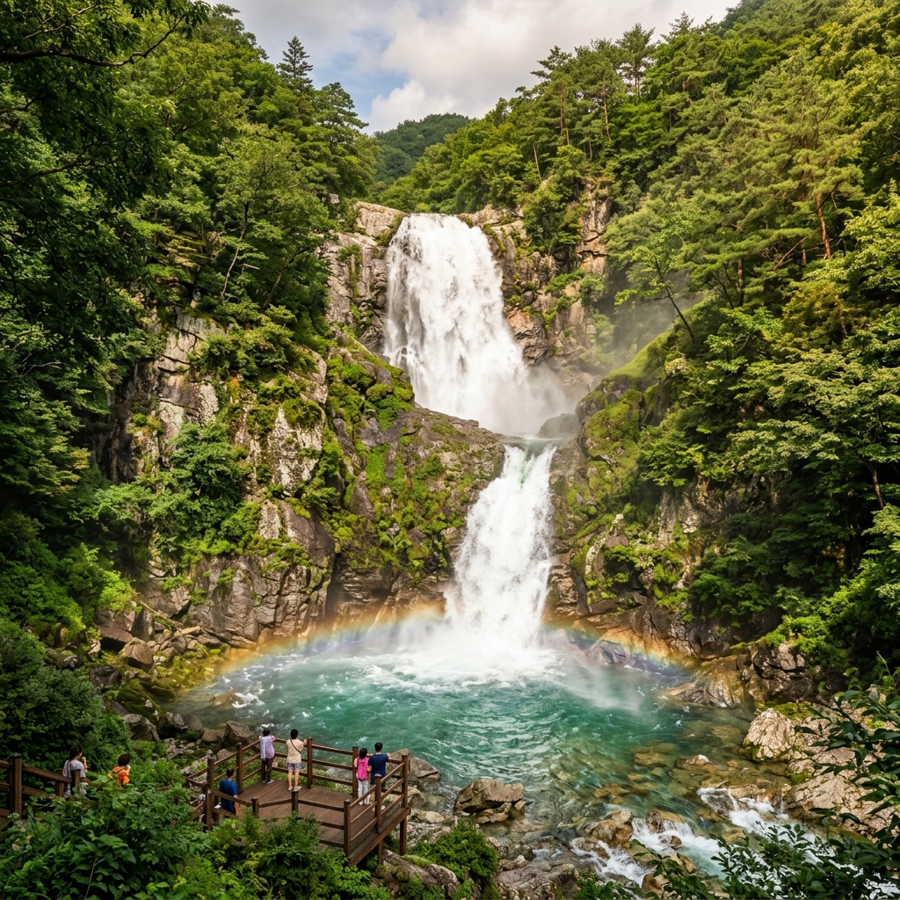
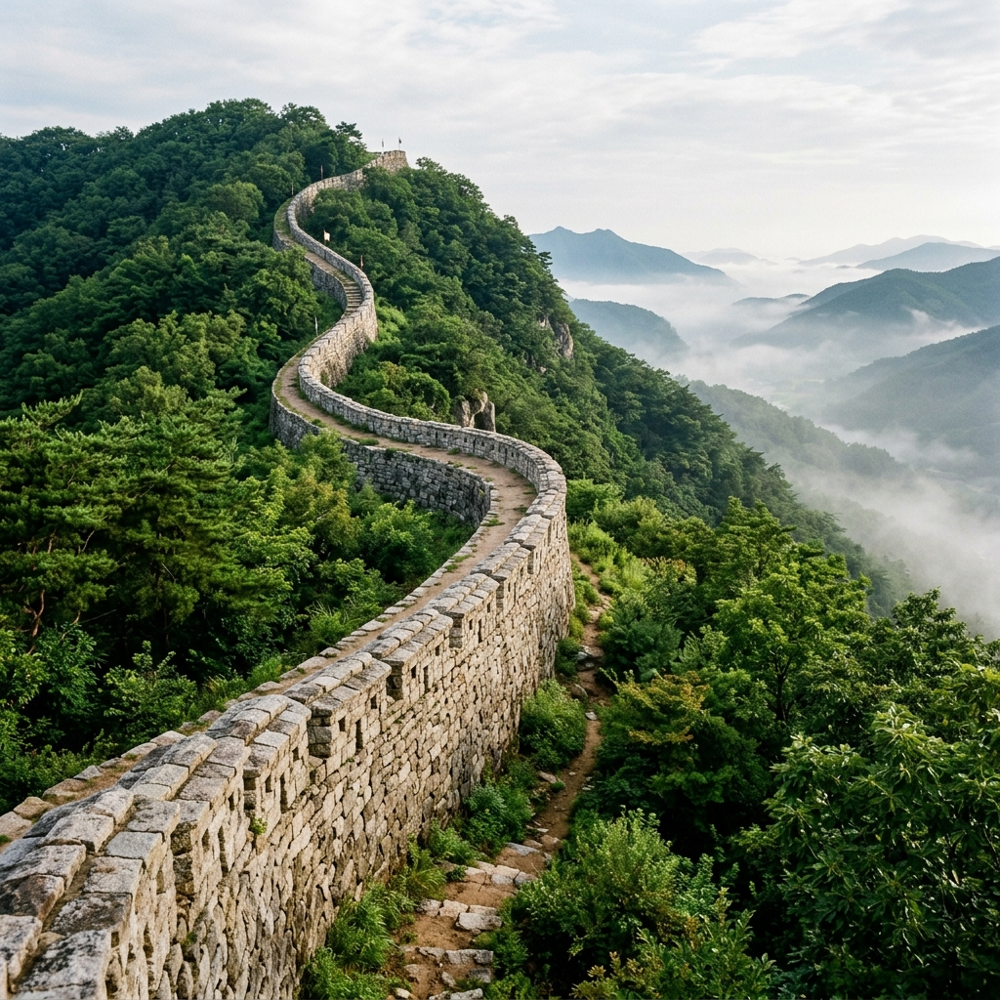
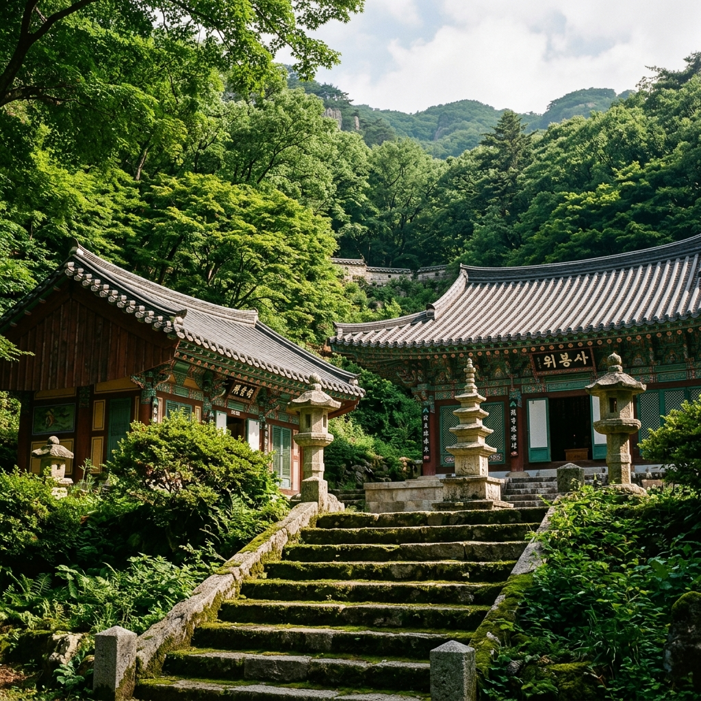

위봉산성(威鳳山城)은 조선 숙종 원년(1675년)에 쌓은 포곡식(包谷式) 석성으로, 유사시 전주의 경기전 어진(御眞)과 왕조 실록을 옮겨 보관하기 위해 세워진 군사·문화 시설입니다.
성벽의 총 둘레는 약 16km에 달하는 대규모 산성으로, 완주 북부의 험한 산지를 자연 장벽으로 삼아 축성되었습니다.
조선 왕조가 이 산성을 선택한 이유는 전주에서 차로 20여 분 거리지만, 험준한 산세로 인해 적군이 쉽게 접근하기 어렵다는 지리적 이점 때문이었습니다.
현재는 성벽 일부와 동문(위봉루) 구간이 잘 보존되어 있으며, 산성 내부를 따라 트레킹 코스가 형성되어 있습니다.
특히 동문 방면의 성벽 길을 걸으면 위봉산 능선과 주변 계곡의 신록이 어우러진 풍경을 즐길 수 있습니다.

위봉폭포는 높이 약 60m의 2단 구조 폭포로, 호남 지역에서 손꼽히는 대형 폭포 중 하나입니다.
위봉산 능선에서 발원한 계곡물이 수직 절벽을 타고 두 차례에 걸쳐 낙하하는 모습은 그 규모만으로도 방문객들의 탄성을 자아냅니다.
폭포 아래에는 넓은 소(沼)가 형성되어 있고, 사방이 수목으로 둘러싸여 있어 폭포와 숲이 어우러진 시원한 분위기가 인상적입니다.
평상시에도 수량이 상당하지만, 6월 장마 전후에는 폭포 수량이 평소의 2~3배로 늘어나 훨씬 웅장한 장관이 펼쳐집니다.
비가 내린 다음 날 또는 비 온 직후(적당한 강우 후)가 폭포를 가장 아름답게 볼 수 있는 타이밍입니다.
폭포까지 접근하는 탐방로는 비교적 평탄해 운동화 착용으로도 충분히 진입할 수 있습니다.
완주 위봉폭포를 6월에 방문해야 하는 이유는 명확합니다. 수량과 신록이 동시에 절정에 달하는 시기가 바로 6월이기 때문입니다.
5월 말~6월 초의 봄비가 내린 직후에는 폭포 수량이 크게 늘어나고, 주변 활엽수의 초록빛 잎사귀가 가장 짙고 생기 있게 빛납니다.
특히 비 내린 다음 날 오전 이른 시간에는 계곡 위로 안개가 피어오르는 몽환적인 풍경이 더해져 마치 한 폭의 산수화 같은 장면이 연출됩니다.
반면 8월 이후 가뭄이 이어지면 폭포 수량이 현저히 줄어들어 아쉬움을 남기는 경우도 있습니다.
7월 장마 절정기에는 폭포 자체는 장엄하지만 진입로가 미끄럽고 안전 문제가 발생할 수 있으니, 안전 위주의 6월 초중순 방문이 가장 이상적입니다.

위봉산성 내부는 크게 두 가지 트레킹 루트로 즐길 수 있습니다.
단거리 성문 코스 (40분): 주차장 → 동문(위봉루) → 성벽 일부 → 원점 회귀. 성벽 기초와 위봉루 문루를 가까이서 감상하는 가장 기본 코스입니다.
위봉폭포 연계 코스 (2시간): 주차장 → 위봉사 → 위봉폭포 → 성벽 능선 구간 일부 → 원점 회귀. 폭포와 사찰, 성벽을 모두 아우르는 알찬 코스입니다.
두 코스 모두 경사가 비교적 완만하고 등산로 정비가 잘 되어 있어 운동화 수준으로 충분히 걸을 수 있습니다.
성벽 능선 구간에서는 완주 북부의 산세가 넓게 펼쳐지는 전망 포인트를 만날 수 있습니다.
위봉산성 내부에 자리한 위봉사는 통일신라 시대에 창건된 고찰로, 현재도 법당과 부속 전각이 잘 보존되어 있습니다.
사찰 경내를 가로질러 위봉폭포로 이어지는 탐방로를 걸으면, 오래된 수목들이 만드는 자연 터널 아래로 시원한 바람이 불어옵니다.
6월에는 사찰 주변 신록이 절정이어서, 짙은 초록빛 속에 고요히 자리한 고찰의 모습이 더욱 인상적입니다.
위봉사 경내에서 잠시 머물며 산사의 고요함을 느끼는 시간도 이 여행의 특별한 매력입니다.
사찰 내 주전(主殿)인 원통전에는 관세음보살상이 모셔져 있으며, 방문객은 정숙을 유지해야 합니다.
위봉산성·위봉폭포는 대중교통보다는 자가용으로 방문하는 것이 훨씬 편리합니다.
자가용: 전주 시내에서 26번 국도를 타고 북쪽으로 약 12km 이동하면 소양면 방향 이정표가 나옵니다. 송광사·위봉사 방향으로 진입한 뒤, 소양면 오성리를 지나 계속 따라가면 위봉산성 입구 주차장에 도착합니다. 내비게이션에 '위봉폭포' 또는 '위봉사'를 검색하면 정확하게 안내됩니다.
전주에서 소요 시간: 약 25~30분
대중교통: 전주 터미널 또는 전주역에서 소양면 방향 농어촌버스를 이용할 수 있으나 배차 간격이 길어 불편합니다. 렌터카 또는 택시 이용을 권장합니다.
전주 기행(한옥마을, 경기전, 남부시장)과 연계한 1박 2일 코스로 짜면 효율적인 전북 여행이 됩니다.

위봉산성·위봉폭포는 입장료가 무료이며, 주차장도 무료로 이용할 수 있습니다.
주차 가능 대수는 소형차 기준 약 30대로 많지 않습니다. 봄·가을 주말에는 만차가 되는 경우도 있으니, 오전 일찍 도착하는 것이 좋습니다.
주차장에서 위봉사 입구까지는 도보 약 10분, 위봉폭포까지는 위봉사를 지나 추가로 5~10분이면 닿습니다.
편의 시설은 주차장 인근에 화장실이 있으며, 별도의 매점은 없으므로 물과 간식을 미리 준비해야 합니다.
위봉산성 방문 길에 들르기 좋은 또 다른 명소가 완주 송광사입니다.
전주에서 위봉산성으로 가는 26번 국도 중간쯤에 송광사 방향 이정표가 있으며, 잠깐 들러 경내를 둘러보는 것만으로도 충분한 볼거리를 제공합니다.
완주 송광사는 9세기 신라 진성여왕 시절 창건된 고찰로, 일주문, 대웅전, 소조사천왕상(보물) 등 볼거리가 풍부합니다.
소양면 일대에는 자연에서 재배한 농산물을 직접 판매하는 소규모 농가도 있어, 계절 채소와 지역 특산물을 구매하는 재미도 있습니다.
전주 한옥마을과 연계해 전주에서 1박 후, 다음 날 아침 일찍 위봉산성·위봉폭포를 방문하고 오전 중에 서울로 귀경하는 당일 연장 코스도 추천합니다.
위봉폭포에서 가장 좋은 사진을 찍으려면 폭포 정면에서 바라보는 구도가 기본입니다.
폭포 하단의 소(沼) 바로 앞 전망 포인트에서 삼각대를 세우고 1~3초 장노출로 찍으면 물줄기가 비단처럼 흐르는 부드러운 사진을 얻을 수 있습니다.
오전 이른 시간(오전 8~10시)에는 폭포 왼쪽으로 햇살이 들어오면서 물 위에 빛이 산란하는 황금빛 분위기가 연출됩니다.
비 온 다음 날 방문 시에는 폭포 주변 안개까지 더해져 신비로운 분위기의 사진을 찍기 좋습니다.
폭포 측면 바위 위에서 찍으면 폭포의 전체 높이(60m)를 더 잘 표현할 수 있는 구도를 찾을 수 있습니다.
6월 우기 시즌에 위봉폭포와 산성을 방문할 때는 안전에 특히 주의해야 합니다.
폭우 중이거나 폭우 직후에는 계곡 수량이 급격히 늘어나 하천 변 탐방로가 위험해질 수 있습니다. 폭우 직후 최소 1~2시간은 기다렸다가 방문하는 것이 안전합니다.
폭포 주변 바위는 이끼가 끼어 매우 미끄럽습니다. 방수 기능이 있는 트레킹화나 밑창이 두꺼운 운동화를 착용해야 합니다.
성벽 능선 구간은 비 온 뒤 점토질 흙길이 진흙으로 변할 수 있어, 신발 오염에 대비해야 합니다.
혼자 방문 시에는 미리 동행에게 목적지와 귀환 예정 시각을 알려두는 것이 기본 안전 수칙입니다.
여름 기온이 높은 날에는 수분 보충을 충분히 하고, 모기 기피제도 챙겨오는 것을 권장합니다.